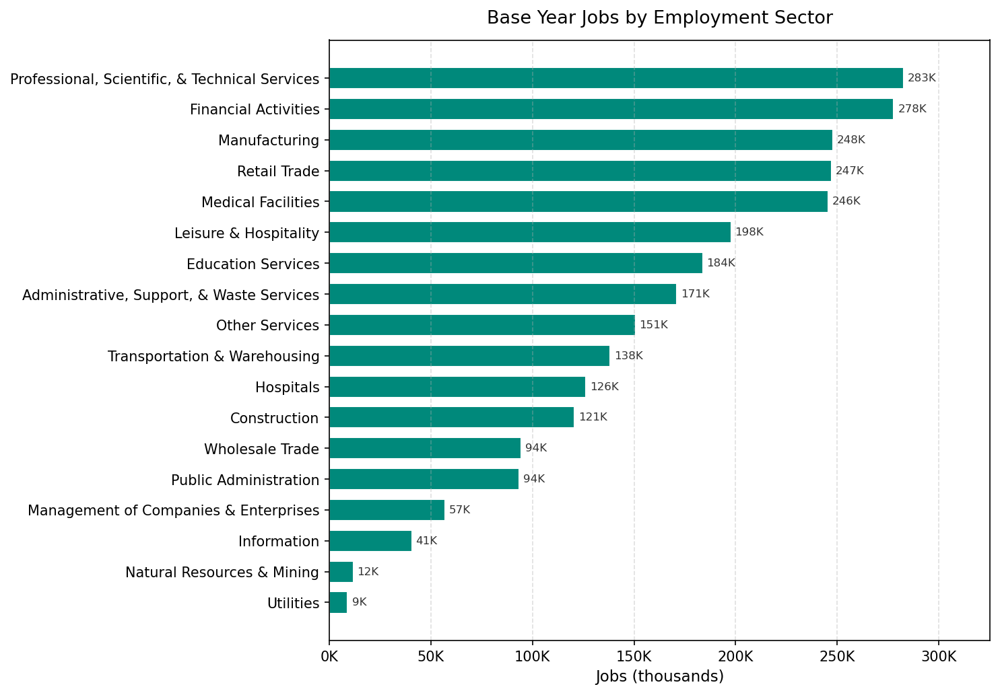

Employment¶
Primary sources: MDOT employment data (commercial sources including Data Axle), REMI employment model exports
This domain covers the base-year job inventory, annual employment growth control totals, job relocation rates, building capacity parameters, and employment sector definitions.
Tables in This Domain¶
| Table | Description | Source |
|---|---|---|
jobs |
Base-year job inventory (one row per job) | CSV |
annual_employment_control_totals |
Target job counts by segment × year | Forecast controls pipeline |
annual_relocation_rates_for_jobs |
Job relocation probability by sector | CSV |
building_sqft_per_job |
Space required per job by building type | CSV |
employment_sectors |
Sector definitions | Constant (prior HDF) |
employed_workers_rate |
Employed worker rate by age group, large area, and year | CSV |
jobs¶
Base-year job inventory. One row per job — not per establishment. Every job must be assigned to a building. The primary source is MDOT employment data derived from commercial providers (including Data Axle), geocoded to buildings.
Index: job_id (unique)
| Column | Type | Rules | Notes |
|---|---|---|---|
job_id |
int32 | unique, no null | |
building_id |
int32 | join → buildings, no null |
-1 = unplaced (assigned to pseudo-building at startup) |
sector_id |
int8 | values: 1–18, no null | Employment sector |
home_based_status |
int8 | values: 0, 1 | 0=non-home-based, 1=home-based |
sqft |
int16 | no null | Square footage per job |
Home-based jobs (value = 1) are located in residential buildings. Non-home-based jobs are in commercial/industrial buildings.
Common issues:
- building_id = -1 — unplaced jobs; should be minimal in base year; large unplaced counts indicate geocoding problems
- sector_id outside 1–18 — check against SEMCOG sector mapping
- building_id referencing non-existent buildings — re-geocode or assign to nearest valid building
- Total job count by sector × large area for the base year should match REMI base year employment
How the model uses key job columns¶
| Column | Used by (model step) | How it's used / why it matters |
|---|---|---|
building_id (-1 = unplaced) |
ELCM | -1 flags a job the ELCM must place this year; already-placed jobs stay put (job relocation is currently off). New jobs added by jobs_transition start at -1. |
sector_id |
ELCM segmentation | A separate ELCM is run per sector (× home-based status); the sector also drives sector-specific job-accessibility variables. |
home_based_status |
ELCM | Home-based jobs (1) sit in residential buildings and are not placed by the building-level ELCM; non-home-based (0) compete for vacant_job_spaces. |
sqft / building_sqft_per_job |
building job capacity | Converts non-residential floor space into job_spaces (see buildings) — the supply that non-home-based jobs fill. |
base_job_spaceis a separate, derived table — a frozen base-year snapshot of each building's non-home-based job count, used for indicators and trend variables. It is not the live job capacity (that isjob_spaces, recomputed from currentnon_residential_sqft).
annual_employment_control_totals¶
Target job counts by large area × sector × home-based status × year. The jobs_transition model step uses this to add or remove jobs annually.
Index: Multi-index (year, sector_id, home_based_status)
Generated by: A forecast controls pipeline that converts REMI employment exports to SEMCOG 18-sector classifications.
| Column | Type | Allowed Values | Notes |
|---|---|---|---|
year |
int16 | all forecast years | Part of multi-index |
sector_id |
int8 | 1–18 | Part of multi-index |
home_based_status |
int8 | 0, 1 | Part of multi-index |
large_area_id |
int16 | 8 valid codes | |
total_number_of_jobs |
int32 | no null | Target job count |
Sample rows (year 2021, Detroit / large_area_id=161, non-home-based, varied sectors):
| year | sector_id | home_based_status | large_area_id | total_number_of_jobs |
|---|---|---|---|---|
| 2021 | 1 | 0 | 161 | 221 |
| 2021 | 3 | 0 | 161 | 13,035 |
| 2021 | 6 | 0 | 161 | 3,982 |
| 2021 | 10 | 0 | 161 | 19,133 |
| 2021 | 13 | 0 | 161 | 51,581 |
Important: All combinations of year × sector × large area × home-based status must be present for all forecast years. Missing cells cause the transition model to skip that segment entirely — jobs in that segment will neither grow nor shrink.
REMI-to-SEMCOG sector mapping: REMI uses its own sector classification, which differs from the SEMCOG 18-sector scheme. A crosswalk file maps REMI sectors to SEMCOG sectors. This crosswalk must be applied before generating control totals.
Common issues:
- Missing sector/year combinations — model will not grow/shrink those jobs; check that all 18 sectors × 8 large areas × 2 home-based statuses × all years are present
- Base year total jobs across all sectors should approximately match the row count in jobs
Employment Sectors¶

| ID | Name | NAICS |
|---|---|---|
| 1 | Natural Resources & Mining | 11, 21 |
| 2 | Construction | 23 |
| 3 | Manufacturing | 31–33 |
| 4 | Wholesale Trade | 42 |
| 5 | Retail Trade | 44–45 |
| 6 | Transportation & Warehousing | 48–49 |
| 7 | Utilities | 22 |
| 8 | Information | 51 |
| 9 | Financial Activities | 52–53 |
| 10 | Professional, Scientific & Technical Services | 54 |
| 11 | Management of Companies & Enterprises | 55 |
| 12 | Administrative, Support & Waste Services | 56 |
| 13 | Education Services | 61 |
| 14 | Medical Facilities | 621, 623, 624 |
| 15 | Hospitals | 622 |
| 16 | Leisure & Hospitality | 71–72 |
| 17 | Other Services | 81 |
| 18 | Public Administration | 92 |
annual_relocation_rates_for_jobs¶
Annual probability of a job relocating, by sector.
Note: Job relocation is currently disabled in the simulation. This table is kept for future use.
Index: sector_id (unique)
| Column | Type | Rules |
|---|---|---|
sector_id |
int8 | values: 1–18, no null |
job_relocation_probability |
float64 | no null |
building_sqft_per_job¶
Space required per job by building type. Used to compute building job capacity (job_spaces = non_residential_sqft / sqft_per_job).
Index: building_type_id (unique)
| Column | Type | Notes |
|---|---|---|
building_type_id |
int8 | Must cover all non-residential building types |
building_sqft_per_job |
int16 | Sq ft per job (typical range: 225–1000) |
Typical values: Office (~300), Retail (~400), Industrial (~550–700), Medical (~225), Institutional (~600).
Common issues: - Missing building types — any non-residential type not in this table will have zero job capacity
employment_sectors¶
Sector definitions. Constant table loaded from a prior model input — rarely needs updating.
Index: sector_id (unique)
| Column | Type | Rules |
|---|---|---|
sector_id |
int8 | values: 1–18 |
sector_name |
object | |
naics_code |
object | no null |
naics_sector_description |
object | no null |
sqft_per_job |
int16 | no null |
employed_workers_rate¶
The fraction of the population in each age group that is employed, by large area and year. Used by the workers_adjustment_model simulation step (formerly fix_lpr) to adjust the workers count in the households table after each year's household transition, keeping the simulated workforce consistent with REMI employment projections.
Index: large_area_id
| Column | Type | Notes |
|---|---|---|
large_area_id |
int16 | 8 valid large area codes — row index |
Age_Group |
object | Age group label (e.g., "Ages 16-19") |
age_min |
int8 | Lower bound of age group |
age_max |
float | Upper bound of age group (NaN for the open-ended oldest group) |
| one column per year | float64 | Employed worker rate for that age group × large area × year (values in [0, 1]) |
Structure: 104 rows (8 large areas × 13 age groups), with year columns running from the historical reference period through the end of the forecast horizon.
Age groups: 16–19, 20–21, 22–24, 25–29, 30–34, 35–44, 45–54, 55–59, 60–61, 62–64, 65–69, 70–74, 75+.
Sample rows — Ages 25-29 across all large areas, showing regional variation:
| large_area_id | Age_Group | age_min | age_max | 2020 | 2025 | 2030 | 2040 | 2050 |
|---|---|---|---|---|---|---|---|---|
| 3 (Wayne excl. Detroit) | Ages 25-29 | 25 | 29 | 0.724 | 0.753 | 0.758 | 0.758 | 0.756 |
| 5 (City of Detroit) | Ages 25-29 | 25 | 29 | 0.680 | 0.737 | 0.740 | 0.744 | 0.751 |
| 93 (Livingston) | Ages 25-29 | 25 | 29 | 0.779 | 0.822 | 0.821 | 0.820 | 0.818 |
| 99 (Macomb) | Ages 25-29 | 25 | 29 | 0.753 | 0.802 | 0.808 | 0.806 | 0.805 |
| 115 (Monroe) | Ages 25-29 | 25 | 29 | 0.748 | 0.788 | 0.797 | 0.803 | 0.799 |
| 125 (Oakland) | Ages 25-29 | 25 | 29 | 0.771 | 0.813 | 0.812 | 0.811 | 0.810 |
| 147 (St. Clair) | Ages 25-29 | 25 | 29 | 0.726 | 0.766 | 0.775 | 0.782 | 0.775 |
| 161 (Washtenaw) | Ages 25-29 | 25 | 29 | 0.754 | 0.803 | 0.804 | 0.803 | 0.802 |
Note: This is not the same as the labor force participation rate in the REMI forecast. REMI's labor force participation rate measures the share of the population that is working or actively seeking work.
employed_workers_ratemeasures the share that is actually employed, derived by dividing projected employment by projected population for each age group × large area. The two rates differ because labor force participation includes unemployed job-seekers.
Update: Derive from REMI employment forecasts by large area, age group, and year. Divide projected employment by projected population in each age group × large area. Update when new REMI runs are available.
Common issues: - All 8 large areas and all 13 age groups must be present (104 rows total) - Year columns must cover the full simulation range - Values outside [0, 1] indicate a data error
Update Checklist (New Forecast Cycle)¶
- [ ] Get new REMI employment export by large area × REMI sector × year
- [ ] Apply REMI-to-SEMCOG sector crosswalk and run the employment controls pipeline
- [ ] Update
jobsif base year changes — obtain updated MDOT employment data (commercial sources) and geocode to buildings - [ ] Verify all 18 sectors × 8 large areas × 2 home-based statuses × all forecast years are present in
annual_employment_control_totals - [ ] Cross-check: sum of
total_number_of_jobsfor base year ≈ total rows injobs - [ ] Update
employed_workers_ratefrom latest REMI employment projections by age group and large area - [ ] Confirm all 104 rows (8 large areas × 13 age groups) are present in
employed_workers_rate - [ ] Confirm
building_sqft_per_jobcovers all non-residential building types